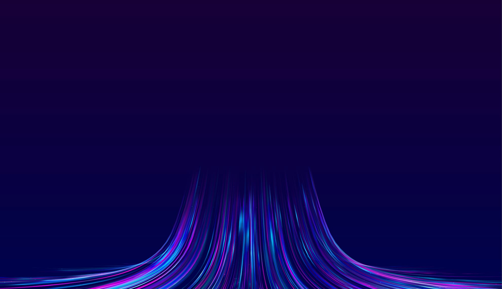
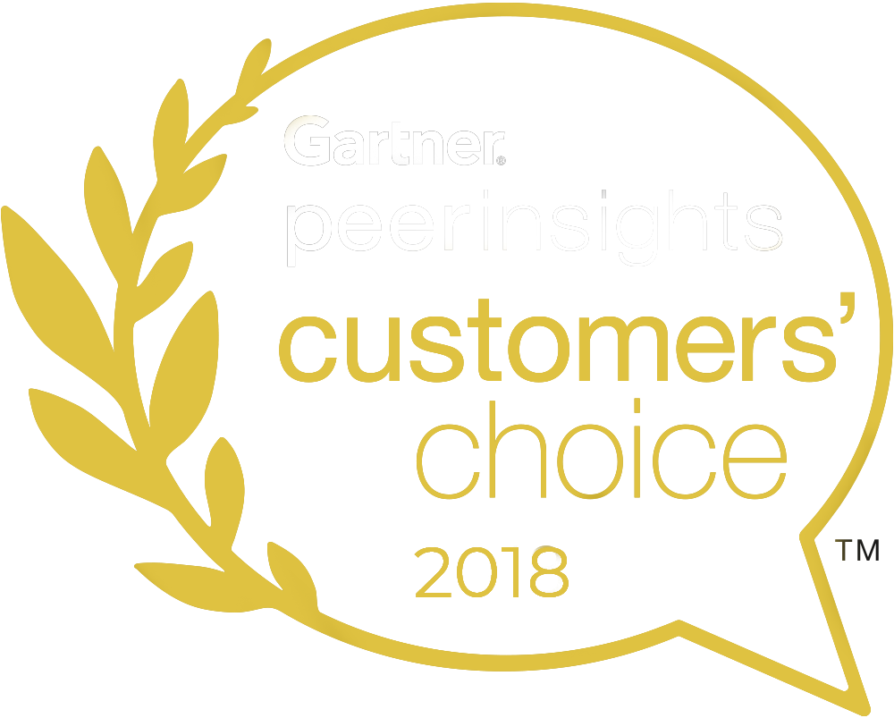
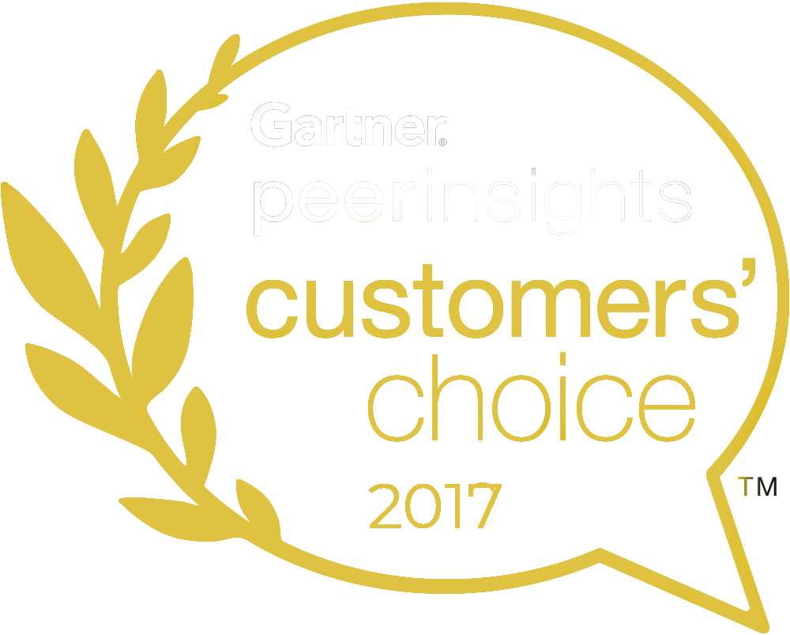

Modal de Producto
Categoría
Análisis Profundo de la solución
Descripción detallada aquí.

Descubra cómo la experiencia de clase mundial de Kaspersky y su portafolio impulsado por IA están redefiniendo la ciberseguridad corporativa.
Somos un proveedor global de ciberseguridad y antivirus con casi 30 años de experiencia. Nuestra profunda inteligencia de amenazas se transforma constantemente en soluciones y servicios de seguridad para proteger empresas, infraestructuras críticas, gobiernos y consumidores en todo el mundo.
El portafolio de seguridad integral de la empresa incluye protección de endpoints líder en la industria y una serie de soluciones y servicios de seguridad especializados para combatir amenazas digitales sofisticadas en constante evolución.

En entornos de TI, OT y tecnologías convergentes, nuestras soluciones mitigan los impactos comerciales más graves del cibercrimen.
Defensas de red y endpoint galardonadas a nivel mundial.
Inteligencia de amenazas global y feeds de datos.
Operaciones de respuesta a incidentes y MDR 24/7.
SIEM de próxima generación con gestión de registros, correlación en tiempo real y mecanismos de detección asistidos por IA.

NDR y EDR combinados en una única interfaz, automatizando el descubrimiento de amenazas avanzadas y APTs.

Feeds de Datos de Amenazas de Kaspersky
Contacte a nuestros expertos corporativos para una evaluación de seguridad personalizada.